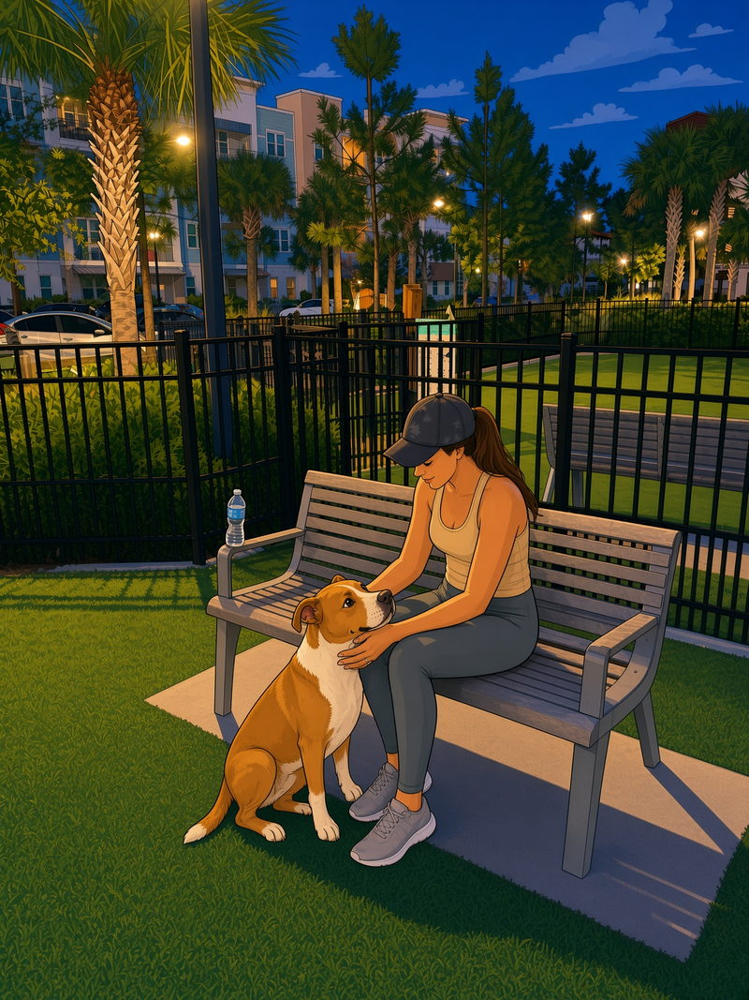
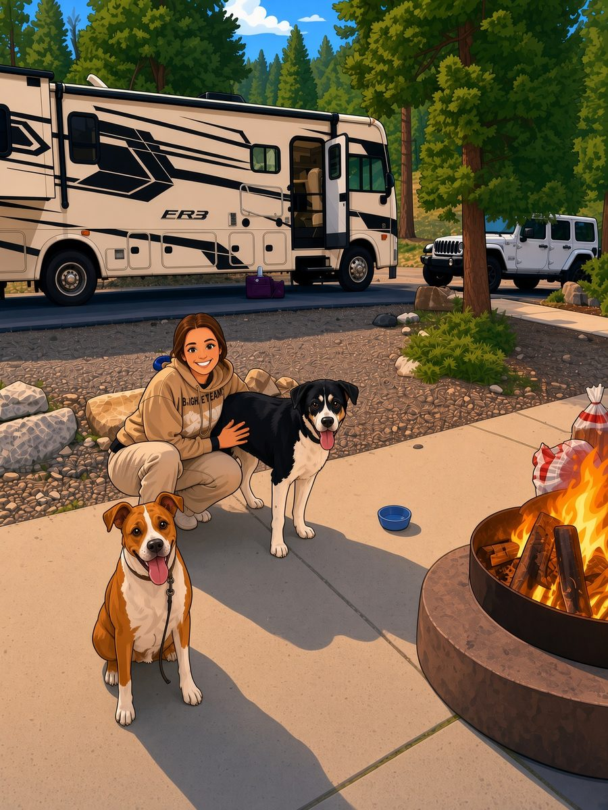

It all started the best way possible — at the dog park. Matt spotted Chelsea sitting on a bench with her dog, Ryder, and struck up a conversation. Before long, he invited her out with friends that same night. Matt’s dog, Titan, made himself right at home by Chelsea’s side — and that’s when Matt knew she was something special.

After purchasing their brand-new RV, Chelsea took a leap of faith and quit her job while Matt worked remotely. Together they set off across the country — glowing desert sunsets, peaceful mountain views, and a new dog park in every city. Life on the road gave them a freedom and closeness they’ll always carry with them.

Today, Chelsea and Matt stand hand in hand, ready to begin their forever. What started as a simple moment — thanks to two dogs who knew they belonged together long before they did — has grown into a love filled with laughter, adventure, and an unbreakable bond. Through every mile traveled, they found home in each other.
…and the rest of the story starts on October the tenth.